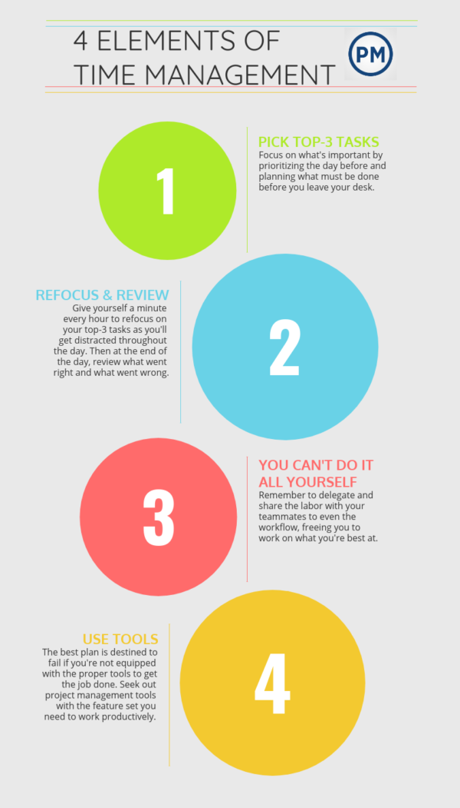
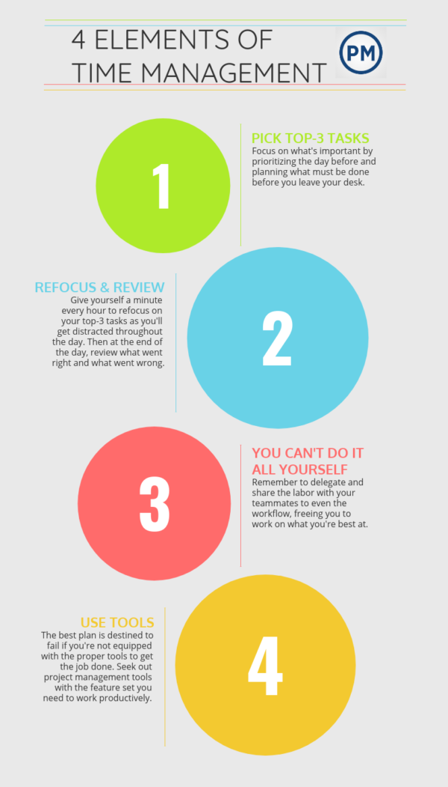

Moderate Time Management
Why to improve your time management
When you learn and maintain good time management skills, you’ll find freedom from deadline pressure and from stress in general. You’ll be more productive, procrastinate less, and have more time to relax, which helps further decrease stress and anxiety.
Eisenhower Matrix
- Do
Do, consists of your most important tasks. The activities which need to be done urgently. The tasks with a deadline approaching or the ones that cannot be delayed generally fall in this category.For putting tasks in this category, you need to thoroughly analyze your priorities first and then decide if it fits with the do it now criteria. If the task needs to be done within a day, or no longer than next day, it is an urgent task. Do.it.now!
- Decide
It constitutes of the tasks which are important, but not necessarily urgent. This could include an array of responsibilities ranging from professional emails, follow-ups, to more personal appointments and commitments.Tasks in this quadrant need to be scheduled for some other time.
- Delegate
refers to the tasks which are not important, but urgent. Although it sounds counter-intuitive, because naturally your first instinct would be that aren’t tasks which are urgent, important too? Not necessarily!These activities generally give you the deception of being important, while in reality they don’t really contribute much towards your productivity.
- Eliminate
These consists of tasks that are essentially your productivity killers. They do not contribute at all towards your goals. Identify these activities and eliminate them to give your productivity a boost.
Common examples of these activities include mindless surfing on social media,
Warren Buffet Strategy
- Write a list of 10-25 of your goals both professional and personal
- Circle your top five goals
- Focus on your top five goals and eliminate the others

Time management tips for people with moderate time management
- Put a time limit on tasks.
- Plan your week on Sunday
- Create a daily plan
- Add a “done list” to your to-do list
- Complete your most important and demanding tasks first thing in the morning
- Block out distractions
- Don’t wait for inspiration - do it now
- Schedule breaks between tasks
- Make the most of waiting times
- Use your calendar
 
